📌 Instalacija
📌 Widgets
📌 Workflow
Program možete preuzeti sa stranice:
Trenutna verzija u kojoj rade primjeri iz ovih uputa je 3.37 (ak. God. 2024/25).
Za Windows OS postoje dva načina preuzimanja:
Workflow možemo zamisliti kao dijagram izvršavanja obrade podataka, a sastoji se od komponenti pomoću kojih učitavamo, obrađujemo i vizualiziramo podatke. Svaku od komponenti nazivamo widget.
Widget-e dodajemo iz alatne trake s lijeve strane ili jednostavno desnim klikom miša na radnom prostoru:
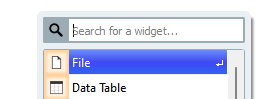
Linija s lijeve strane svakog widget-a predstavlja ulazne podatke, a s desne strane izlaz. Na primjer, File šalje podatke u Data Table:
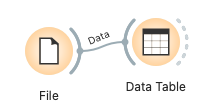
Za učitavanje podataka koristimo widget File.
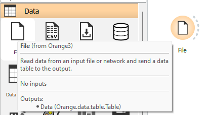
Podatke možemo učitati iz datoteka (npr. csv, tab) ili putem URL-a.
Dataset učitava podatke iz online skladišta.
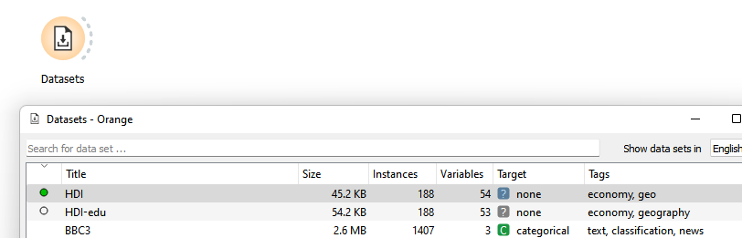
Widget Google Sheets omogućuje učitavanje podataka iz Google tablice.
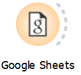
Potrebno je podijeliti link tako da je dostupan svima (share, anyone with the link) te ga "zalijepiti" u polje URL:
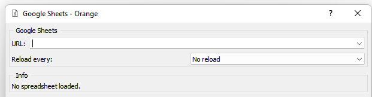
Widget Data Table omogućuje pregled i odabir podataka.
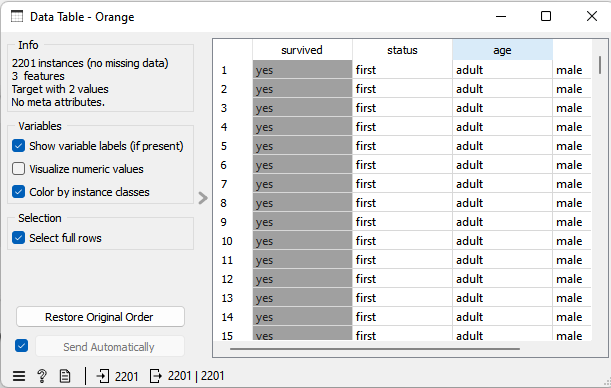
Ako želimo spremiti podatke nakon obrade u Orange-u, koristimo widget Save Data.
Na primjer, učitajmo podatke iz titanic.tab:
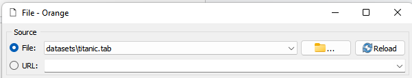
Klikom na widget i Save As možemo odabrati spremanje u csv obliku:
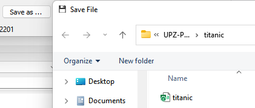
Cijeli workflow pogledajte ovdje:
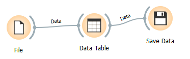
U ovom primjeru nije bilo nikakve obrade podataka već smo samo podatke koji su bili odvojeni tab-om spremili u csv oblik.
Za ovaj primjer koristit ćemo skup podataka iris kojeg možete preuzeti sa stranice kolegija ili koristiti lokalni iris.tab kojeg ste dobili s instalacijom.
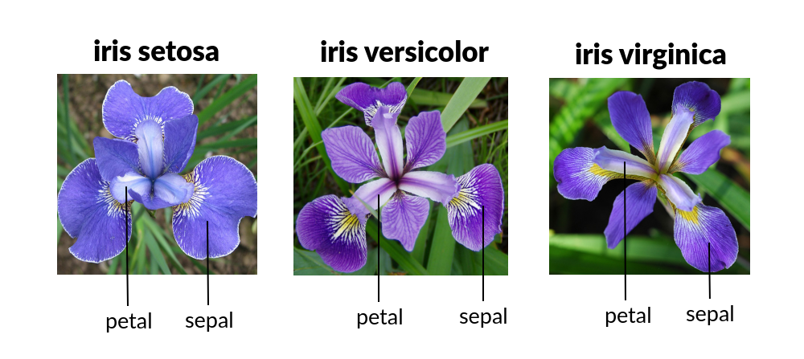
Zadatak: Za svaku vrstu cvijeta i podatak petal length potrebno je izračunati:
Najprije ćemo učitati podatke te ih prikazati u Data Table.
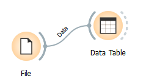
Primjer:
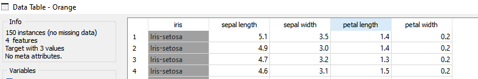
Nisu nam potrebni svi stupci već samo:
Stoga ćemo izdvojiti samo one stupce koji su nam potrebni pomoću Select Columns widget-a.
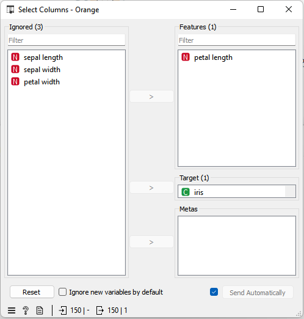
Opet ćemo dodati Data Table kako bi mogli vidjeti što smo dobili.
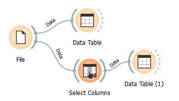
Obzirom da je potrebno izračunati srednju vrijednost za svaku vrstu (grupu), moramo napraviti grupiranje pomoću Group By.
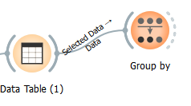
Zadana je samo srednja vrijednost (mean). Biramo što nam je potrebno od ostalih opcija (aggregations).
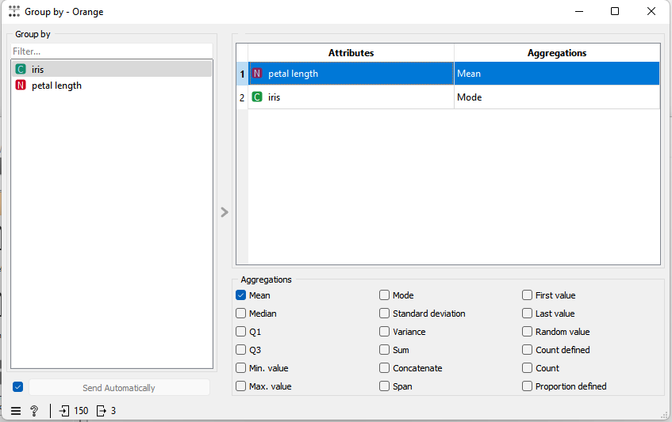
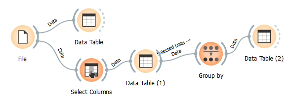
Pogledajte što ste dobili kao rezultat.
Možemo primijetiti kako iz naziva tipa "Data Table (1)" ne možemo zaključiti o čemu se točno radi, tako da je dobro promijeniti nazive widget-a u nešto smisleno, npr.:
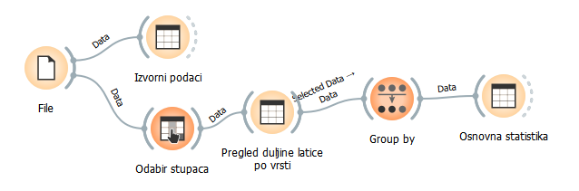
Za ovaj primjer ćemo također učitati zadane podatke iris.tab.
Zadatak: Izračunati korelaciju varijable petal length za sve vrste zajedno.
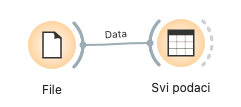
Primjer:
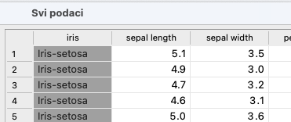
Za računanje korelacije koristimo widget Correlations.
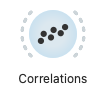
Biramo zadanu Pearson korelaciju (za sad nas ne zanimaju detalji jer se učimo raditi s widget-ima). Također biramo petal length umjesto svih kombinacija.
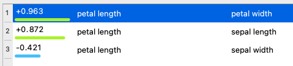
Ako ne želimo prikaz iz samog widget-a, onda možemo preusmjeriti rezultat na Data Table.
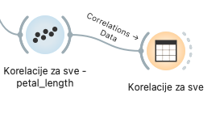
Kod povezivanja widget-a Correlations i Data Table, zadana opcija je prijenos podataka (Data), ali u ovom slučaju želimo prikazati vrijednosti korelacija, a ne sve podatke.
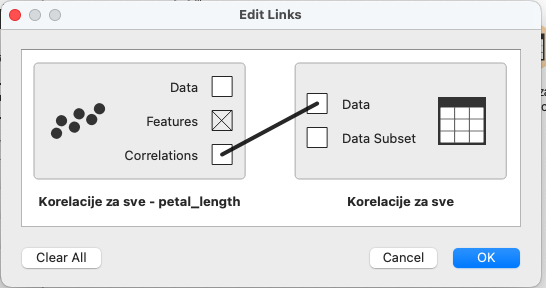
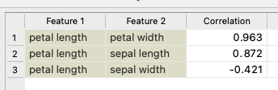
Zadatak: Potrebno je izračunati korelaciju, ali samo za vrstu iris virginica.
U ovom slučaju, moramo odabrati odgovarajuće retke koji pripadaju toj vrsti. Koristit ćemo widget Select Rows.
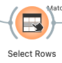
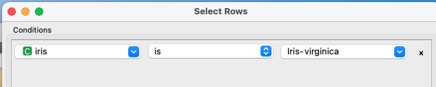
Ovaj problem je bio dosta jednostavan, tako da smo morali dodati samo jedan uvjet. Inače, moguće je dodati više uvjeta za filtriranje podataka.
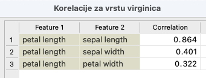
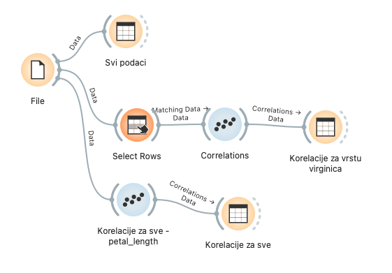
Učitajmo podatke iz iris.tab. Potrebno je nacrtati histogram za petal length.
Za tu namjenu koristimo widget Distributions. Možda se malo teže sjetiti kako se zove widget, ali može se u tražilicu početi pisati histogram, pa će ga svakako naći.
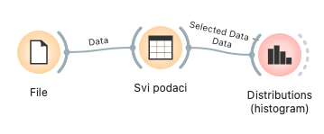
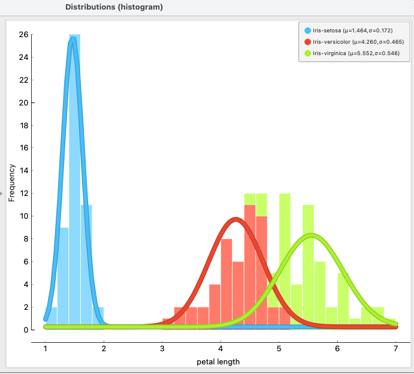
Na slici su prikazani histogrami za sve tri vrste cvjetova. Bilo je potrebno prilagoditi bin width kako bi se prikazali podaci kao na slici (slično kako ćemo raditi u Pythonu).
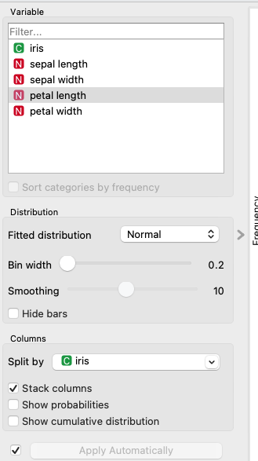
Za prikaz samo jedne vrste, potrebno je izdvojiti podatke kao u prethodnom slučaju pomoću Select Rows widget-a.
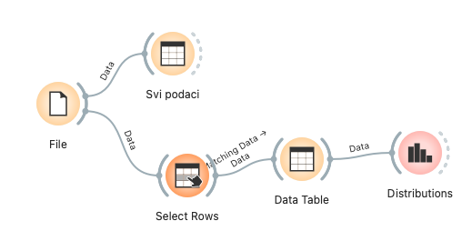
Učitajmo podatke iz iris.tab.
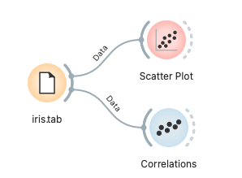
Najveću korelaciju imaju:
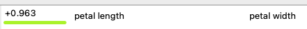
Pokušajmo nacrtati raspršeni grafikon, odnosno Scatter Plot upravo u kombinaciji s tim varijablama.
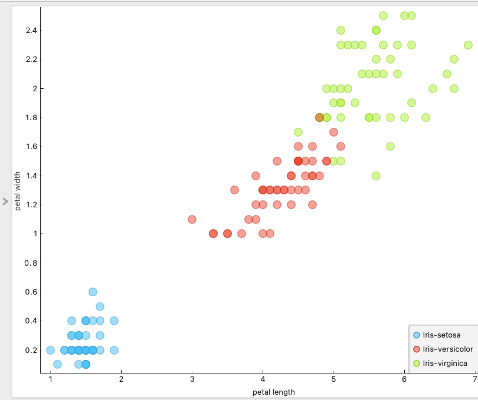
Prema slici vidimo kako su se vrste prilično razdvojile. S druge strane, ako pogledamo korelaciju:
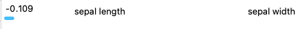
Onda će grafikon izgledati ovako:
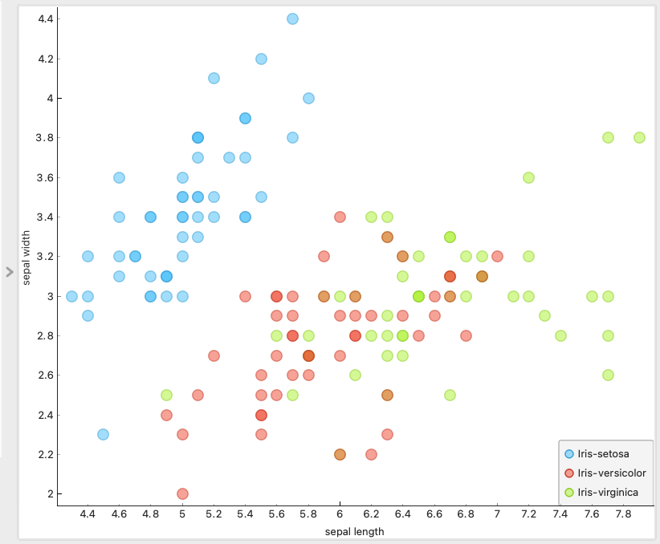